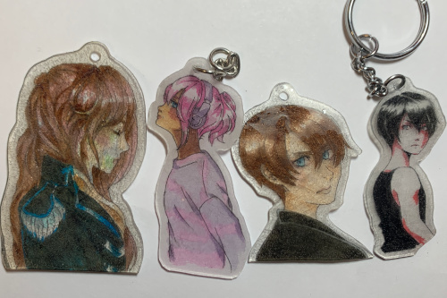

I hope you all had a happy thanksgiving and listened to lots of thanksgiving music! I made some cute lil bell pepper jack-o-lanterns because I completely forgot to on Halloween.
For Black Friday deals, I grabbed a $30 copy of Super Mario Odyssey (because I played Ryan's copy) and 2 games for him for Christmas. Not really much that I saw this year. I didn't even see any movies? I wanted to buy Barbie ;_;

It's all piano. There's a religious thrift store in my hometown that exclusively plays piano covers of old hits. Tong Poo (piano) is what I imagine would be played in a christian weeaboo thrift store.
good movie
no I didn't buy it because the side of the CD is written in katakana...
guess which book cover nerd I bought this for...
I set out to finish a drawing on Thanksgiving morning and instead churned out an oversized hoodie for Veronie. Ah... well...


My little Verona is so cute! He has no fangirls though? At least none that email me. Liam and Cheby are the ones that get all the love!
I got a couple group photos in because group photos are fun!!! Until Cheby refuses to stand and takes everyone down with him.


The other day I felt inspired to try to make some shrinky dinks. I traced out some art I've already drawn on the plastic and colored with copic and it mostly worked! The colors get so dark once shrunk!! They're extremely hard to see while large because they're so light.
A few of them grew bubbles in the plastic and none of them hardened completely flat. Is there a secret out there?? I want to keep at it, because they are really fun to make!